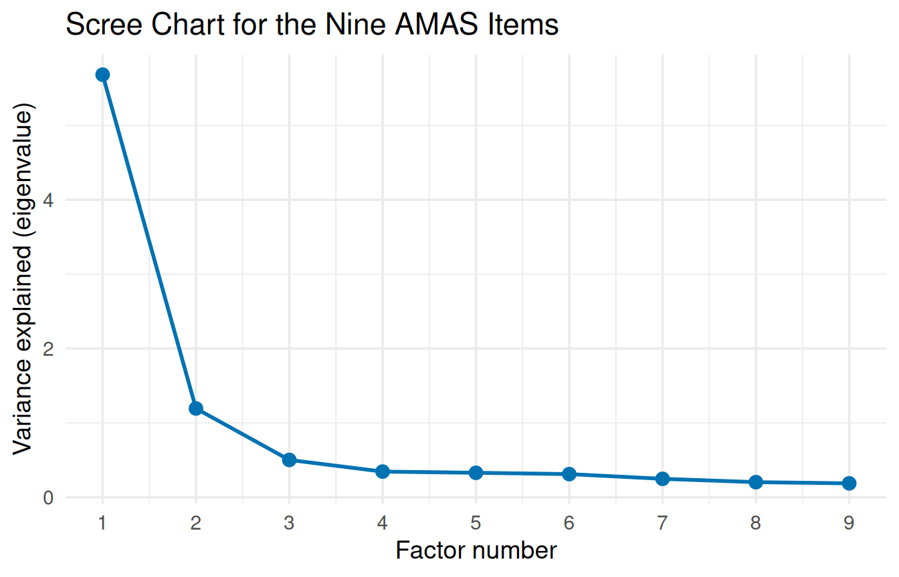

# ggplot2 draws the scree chart; psych runs the factor analysis
# and Cronbach's alpha.
library(ggplot2)
library(psych)
Attaching package: 'psych'The following objects are masked from 'package:ggplot2':
%+%, alphaThis chapter follows the factor analysis workflow from Chapter 11 of the textbook: look at the correlation matrix, choose the number of factors with a scree chart, extract and rotate the factors, read the factor matrix, and check each factor’s items with Cronbach’s alpha.
Get the script: Download the Chapter 11 script, chapter_11.R, and save it in the same folder as your data.
Download amas_math_anxiety.csv into the same folder as the script. It holds answers from 2,200 adults to the nine-item Abbreviated Math Anxiety Scale (AMAS), which you used for Cronbach’s alpha in Chapter 2. The question in this chapter: do the nine items measure one kind of math anxiety, or more than one?
The variables used in this chapter:
| Variable | Type | What it records |
|---|---|---|
item_1 to item_9 |
Numerical | Anxiety ratings for nine math situations (such as listening to a lecture or taking an exam), each recorded on a \(1 \text{ to } 5\) scale where a value of \(1\) indicates low anxiety and \(5\) indicates high anxiety. |
The data key describes the situation behind each item. Keep it open as you read the results: naming the factors means reading what their items have in common.
This chapter uses ggplot2 for the scree chart and psych for the factor analysis and Cronbach’s alpha. If either is not installed yet, go back to Install and load packages in Getting Set Up.
# ggplot2 draws the scree chart; psych runs the factor analysis
# and Cronbach's alpha.
library(ggplot2)
library(psych)
Attaching package: 'psych'The following objects are masked from 'package:ggplot2':
%+%, alphaThe message about %+% and alpha is the one explained in Chapter 2, and you can ignore it.
A factor analysis uses every column you give it, so keep only the survey items. This file holds nothing but the nine items, but most datasets have other columns too, so the script shows how to pick the items out:
# CHANGE THIS: the file name of your dataset, inside the quotes.
amas <- read.csv("amas_math_anxiety.csv")
# Keep only the survey items, as in Chapter 2.
# amas[, c(...)] keeps every row (nothing before the comma)
# and only the columns named inside c().
# CHANGE THIS: your dataset and the names of your items
items <- amas[, c("item_1", "item_2", "item_3", "item_4",
"item_5", "item_6", "item_7", "item_8",
"item_9")]What you see
students <- read.csv("census_at_school.csv")
cor(students)Error in `cor()`:
! 'x' must be numericWhat it means: the dataset includes columns that are not numbers (such as Gender), and a correlation needs numbers.
How to fix it: keep only the item columns, as in the items <- amas[, c(...)] line, and use items from then on.
# 1. CORRELATION MATRIX: the correlation between every pair of
# items, rounded to 2 decimal places.
# You do not need to change this line.
round(cor(items), 2) item_1 item_2 item_3 item_4 item_5 item_6 item_7 item_8
item_1 1.00 0.50 0.61 0.44 0.44 0.59 0.59 0.35
item_2 0.50 1.00 0.57 0.80 0.68 0.48 0.49 0.71
item_3 0.61 0.57 1.00 0.55 0.56 0.71 0.69 0.47
item_4 0.44 0.80 0.55 1.00 0.71 0.48 0.47 0.75
item_5 0.44 0.68 0.56 0.71 1.00 0.53 0.52 0.67
item_6 0.59 0.48 0.71 0.48 0.53 1.00 0.80 0.43
item_7 0.59 0.49 0.69 0.47 0.52 0.80 1.00 0.45
item_8 0.35 0.71 0.47 0.75 0.67 0.43 0.45 1.00
item_9 0.60 0.58 0.69 0.57 0.61 0.69 0.68 0.56
item_9
item_1 0.60
item_2 0.58
item_3 0.69
item_4 0.57
item_5 0.61
item_6 0.69
item_7 0.68
item_8 0.56
item_9 1.00Each number is the correlation between two items, and the diagonal of 1.00s is each item with itself. Two neighborhoods show up: items 2, 4, 5, and 8 correlate 0.67 to 0.80 with each other, and items 1, 3, 6, 7, and 9 correlate 0.59 to 0.80, while most correlations between the two groups are lower (0.35 to 0.61).
The eigenvalues measure how much variation each potential factor explains, largest first. Store them in a small dataset with the factor numbers and plot them:
# 2. SCREE CHART.
# eigen(cor(items))$values gives the amount of variation each
# potential factor explains (its eigenvalue), largest first.
# 1:9 means the whole numbers from 1 to 9, one per item.
# CHANGE THIS: the 9 in 1:9, to your number of items
eigenvalues <- eigen(cor(items))$values
scree <- data.frame(Factor = 1:9, Eigenvalue = eigenvalues)
round(scree, 2) Factor Eigenvalue
1 1 5.68
2 2 1.19
3 3 0.50
4 4 0.35
5 5 0.33
6 6 0.31
7 7 0.25
8 8 0.20
9 9 0.19# geom_line() joins the points; geom_point() marks them.
# scale_x_continuous(breaks = 1:9) labels every factor number.
# CHANGE THIS: the 9 in 1:9 again, and your title
ggplot(scree, aes(x = Factor, y = Eigenvalue)) +
geom_line(color = "#0072B2", linewidth = 1) +
geom_point(color = "#0072B2", size = 3) +
scale_x_continuous(breaks = 1:9) +
labs(title = "Scree Chart for the Nine AMAS Items",
x = "Factor number",
y = "Variance explained (eigenvalue)") +
theme_minimal(base_size = 14)
The line drops steeply from Factor 1 to Factor 2, bends at Factor 3, and then flattens into rubble. The elbow is at Factor 3, so keep the two factors before it.
Change the 9 in 1:9 (in two places) to the number of items you kept. If they do not match, R stops with arguments imply differing number of rows.
fa() from the psych package runs the factor analysis. Set the number of factors from the scree chart, fm = "pa" for principal axis factoring, and rotate = "varimax" for varimax rotation:
# 3. FACTOR ANALYSIS with fa() from psych.
# nfactors = 2 is the number of factors to extract (from the
# scree chart).
# fm = "pa" means principal axis factoring.
# rotate = "varimax" means varimax rotation.
# CHANGE THIS: the number of factors, and a name for the result
paf <- fa(items, nfactors = 2, fm = "pa", rotate = "varimax")
# The rotated factor matrix.
# cutoff = 0 prints every loading (by default, R hides small
# ones).
# sort = TRUE lists the items grouped by the factor they load
# on most.
# CHANGE THIS: your result's name
print(paf$loadings, cutoff = 0, sort = TRUE)
Loadings:
PA1 PA2
item_1 0.644 0.287
item_3 0.735 0.383
item_6 0.842 0.263
item_7 0.819 0.271
item_9 0.695 0.453
item_2 0.344 0.794
item_4 0.293 0.861
item_5 0.406 0.693
item_8 0.257 0.791
PA1 PA2
SS loadings 3.252 3.054
Proportion Var 0.361 0.339
Cumulative Var 0.361 0.701The output matches the layout of the textbook’s Table 11.2, with the factors labeled PA1 and PA2:
sort = TRUE, the items are grouped by the factor they load on most. Items 1, 3, 6, 7, and 9 load on PA1 (0.64 to 0.84), and items 2, 4, 5, and 8 load on PA2 (0.69 to 0.86). Using the common 0.40 benchmark (a loading of 0.40 or more makes an item a meaningful member of a factor), two items also load on the other factor: item 9 (0.45 on PA2) and item 5 (0.41 on PA1). Each still loads much more strongly on its own factor, but the structure is not perfectly simple.PA1 items are about learning math (lectures, the board, a new chapter); the PA2 items are about being evaluated (tests, quizzes, a difficult homework load). These match the AMAS’s two published parts, learning anxiety and evaluation anxiety.Proportion Var is each factor’s share of the total variance: 36.1% for PA1 and 33.9% for PA2. Cumulative Var shows the total, 70.1%.Ignore the SS loadings row. The communalities (\(h^2\)) and uniquenesses (\(u^2\)) come next:
# Communalities (h2) and uniquenesses (u2), rounded to 3 places.
# CHANGE THIS: your result's name, in both lines
round(paf$communality, 3)item_1 item_2 item_3 item_4 item_5 item_6 item_7 item_8 item_9
0.498 0.749 0.686 0.827 0.646 0.778 0.745 0.691 0.688 round(paf$uniquenesses, 3)item_1 item_2 item_3 item_4 item_5 item_6 item_7 item_8 item_9
0.502 0.251 0.314 0.173 0.354 0.222 0.255 0.309 0.312 The communalities run from 0.50 (item 1) to 0.83 (item 4), so the two factors explain at least half of every item’s variance. Each uniqueness is 1 minus the communality.
fa() sometimes prints a warning, for example about a “Heywood case.” Do not skip past it: copy the warning, and check the communalities, which should fall between 0 and 1.
For maximum likelihood, change fm = "pa" to fm = "ml":
# 4. MAXIMUM LIKELIHOOD: the same analysis, with fm = "ml".
# CHANGE THIS: the number of factors, and a name for the result
ml <- fa(items, nfactors = 2, fm = "ml", rotate = "varimax")
print(ml$loadings, cutoff = 0, sort = TRUE)
Loadings:
ML2 ML1
item_1 0.629 0.300
item_3 0.720 0.393
item_6 0.853 0.260
item_7 0.833 0.265
item_9 0.687 0.449
item_2 0.331 0.806
item_4 0.291 0.866
item_5 0.410 0.687
item_8 0.268 0.780
ML2 ML1
SS loadings 3.243 3.063
Proportion Var 0.360 0.340
Cumulative Var 0.360 0.701The loadings are within about 0.02 of the principal axis results, and the items group the same way. As the textbook says, when the factors are strong, both methods give nearly the same answer. (ML2 and ML1 are just the factor labels; maximum likelihood numbers them in a different order.)
Change the number after nfactors = to the number of factors from your scree chart, and keep fm = "pa" for Likert-type survey items: principal axis factoring makes few assumptions about the shape of your data, and survey answers are rarely symmetrical. For items scored in opposite directions (where a high rating means less of the trait), the loading has a minus sign; read its size the same way.
Finally, check each factor’s items with Cronbach’s alpha before you combine them into a score, as in Chapter 2:
# 5. CRONBACH'S ALPHA for the items in each factor, as in
# Chapter 2.
# psych::alpha() makes sure R uses the alpha() from psych (see
# Chapter 2).
# $total$raw_alpha keeps just Cronbach's alpha from the results.
# CHANGE THIS: the items that loaded on each factor
psych::alpha(items[, c("item_1", "item_3", "item_6", "item_7",
"item_9")])$total$raw_alpha[1] 0.9084704psych::alpha(items[, c("item_2", "item_4", "item_5",
"item_8")])$total$raw_alpha[1] 0.9110529Both factors are reliable: 0.91 for the learning items and 0.91 for the evaluation items, well above the 0.70 threshold. You can now build a composite score for each factor with rowSums(), as in Chapter 2.
List the items that loaded on each factor inside c(), one line per factor. Add a line for each extra factor.